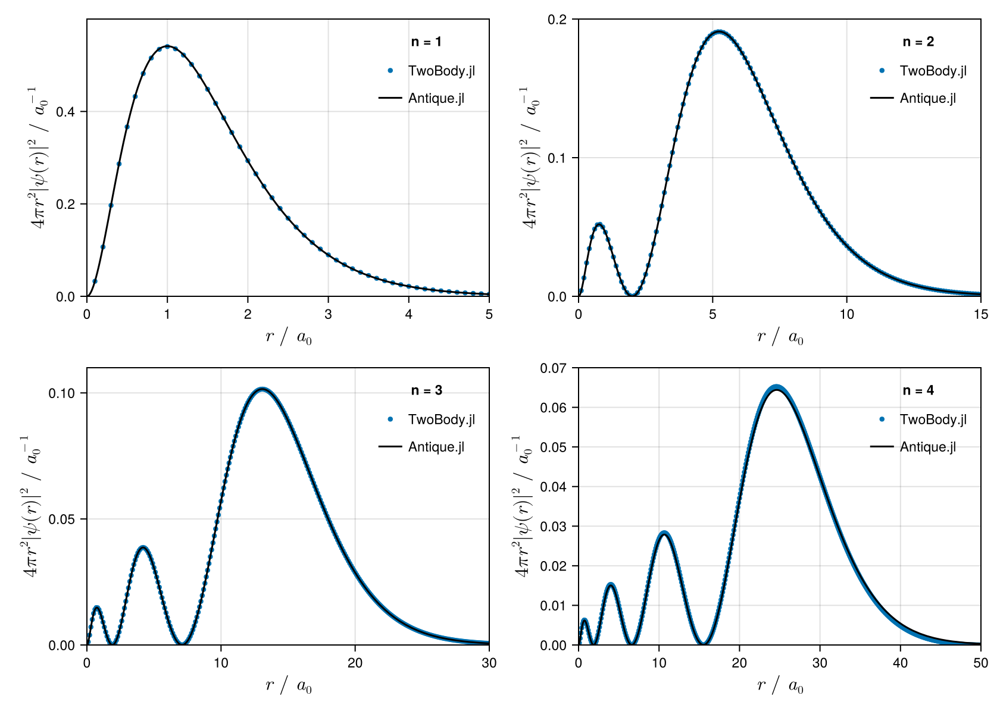

using TwoBody
H = Hamiltonian(
NonRelativisticKinetic(ℏ = 1 , m = 1),
CoulombPotential(coefficient = -1),
)
FDM = FiniteDifferenceMethod(
Δr = 0.1,
rₘₐₓ = 50.0,
l = 0,
direction = :c,
solver = :LinearAlgebra,
)
julia> solve(H, FDM)
# method
FiniteDifferenceMethod(Δr=0.1, rₘₐₓ=50.0, R=0.1:0.1:50.0, l=0, direction=c, solver=LinearAlgebra)
# eigenvalue
E₁ = -0.49875621120876734
E₂ = -0.12492197250388293
E₃ = -0.05554012469043975
E₄ = -0.03120072333117298
# others
n norm, <ψₙ|ψₙ> = cₙ' * cₙ
1 1.0000000000000002
2 0.9999999999999997
3 1.0
4 0.9999999999999999
n error check, |<ψₙ|H|ψₙ> - E| = |cₙ' * H * cₙ - E| = 0
1 1.2501111257279263e-13
2 1.006972283335017e-13
3 1.1726036808212825e-13
4 9.801881528659351e-14
n expectation value of NonRelativisticKinetic(ħ=1, m=1)
1 3.2786923701708313
2 3.5307031141544387
3 3.5759997979303284
4 3.5934083915830506
n expectation value of CoulombPotential(coefficient=-1)
1 -3.7774485813797156
2 -3.6556250866584157
3 -3.631539922620877
4 -3.6246091149143225
(hamiltonian = Hamiltonian(NonRelativisticKinetic(ħ=1, m=1), CoulombPotential(coefficient=-1)), perturbation = Hamiltonian(), method = FiniteDifferenceMethod(Δr=0.1, rₘₐₓ=50.0, R=0.1:0.1:50.0, l=0, direction=c, solver=LinearAlgebra), nₘₐₓ = 4, H = sparse([1, 2, 1, 2, 3, 2, 3, 4, 3, 4 … 497, 498, 497, 498, 499, 498, 499, 500, 499, 500], [1, 1, 2, 2, 2, 3, 3, 3, 4, 4 … 497, 497, 498, 498, 498, 499, 499, 499, 500, 500], [89.99999999999999, -24.999999999999993, -100.0, 94.99999999999999, -33.33333333333333, -75.0, 96.66666666666666, -37.49999999999999, -66.66666666666666, 97.49999999999999 … 99.97987927565391, -49.89959839357429, -50.10060362173037, 99.97991967871485, -49.89979959919839, -50.1004016064257, 99.97995991983967, -49.89999999999999, -50.1002004008016, 99.97999999999999], 500, 500), J = sparse([1, 2, 3, 4, 5, 6, 7, 8, 9, 10 … 491, 492, 493, 494, 495, 496, 497, 498, 499, 500], [1, 2, 3, 4, 5, 6, 7, 8, 9, 10 … 491, 492, 493, 494, 495, 496, 497, 498, 499, 500], [0.010000000000000002, 0.04000000000000001, 0.09, 0.16000000000000003, 0.25, 0.36, 0.48999999999999994, 0.6400000000000001, 0.81, 1.0 … 2410.81, 2420.6400000000003, 2430.49, 2440.3599999999997, 2450.25, 2460.1600000000003, 2470.09, 2480.0399999999995, 2490.0099999999998, 2500.0], 500, 500), E = [-0.49875621120876734, -0.12492197250388293, -0.05554012469043975, -0.03120072333117298], C = [0.42543802418497695 -0.4251461161935358 0.4250919140636376 0.42517096061995674; 0.38501612033694493 -0.38316260548855374 0.3828188192363936 0.3827865209730681; … ; -3.1117294796655107e-16 2.778755334869982e-11 4.328032480039691e-7 -3.851240744620418e-5; 3.0672222532313215e-16 1.3851153379362121e-11 2.1589209275339216e-7 -1.9215539035970683e-5], ψ = [0.5093160129260595 -0.1803838291998678 0.09822040734934455 0.06432384275314983; 0.46092465688260226 -0.16257078531739505 0.08845291835112333 0.057911527982048155; … ; -3.725228028039728e-16 1.1789888431798156e-11 1.0000216403717652e-7 -5.826517495462732e-6; 3.6719459003848603e-16 5.876859720074794e-12 4.988335132285343e-8 -2.9071066132186216e-6])
# solve
using TwoBody
H = Hamiltonian(NonRelativisticKinetic(1,1), CoulombPotential(-1))
FDM = TwoBody.FiniteDifferenceMethod()
res = solve(H, FDM, info=0, nₘₐₓ=4)
# benchmark
import Antique
HA = Antique.HydrogenAtom(Z=1, Eₕ=1.0, a₀=1.0, mₑ=1.0, ℏ=1.0)
# plot
using CairoMakie
fig = Figure(
size = (840,600),
fontsize = 11.5,
backgroundcolor = :transparent
)
for n in 1:4
axis = Axis(
fig[div(n-1,2)+1,rem(n-1,2)+1],
xlabel = L"$r~/~a_0$",
ylabel = L"$4\pi r^2|\psi(r)|^2~ /~{a_0}^{-1}$",
xlabelsize = 16.5,
ylabelsize = 16.5,
limits=(
0, [5, 15, 30, 50][n],
0, [0.6, 0.2, 0.11, 0.07][n],
)
)
X = res.method.R
Y = 4π * X .^2 .* res.ψ[:,n] .^ 2
scatter!(axis, X, Y, label="TwoBody.jl", markersize=6)
lines!(axis, 0..50, r -> 4π * r^2 * abs(Antique.ψ(HA,r,0,0,n=n))^2, label="Antique.jl", color=:black)
axislegend(axis, "n = $n", position=:rt, framevisible=false)
end
fig
